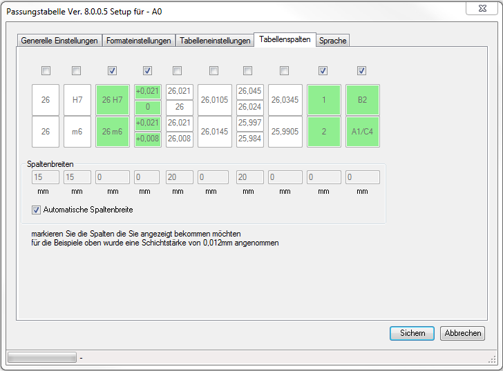

es werde nur die markierten, grün hinterlegten, Spalten eingefügt
die Spaltenbreite kann für jede Spalte angegeben werden
die Spaltenbreite wird für jede Spalte automatisch berechnet
 sind nicht alle Texte unter Sprache definiert und es erscheint in einer Überschriftspalte kein Text
sind nicht alle Texte unter Sprache definiert und es erscheint in einer Überschriftspalte kein Text
dann funktioniert die autom. Spaltenberechnung nicht korrekt
zeigt das Maß an
zeigt die Passung an
zeigt das Maß + Passung an
zeigt die Toleranzen der Passung an
zeigt die Abmaße an
zeigt Toleranzmitte des Abmaßes an
zeigt die Toleranzen des Vorbearbeitungsmaßes inkl. Schichtstärke an
zeigt Toleranzmitte des Vorbearbeitungsmaßes an
zeigt die Anzahl der gefundenen Maß/Passungskombinationen an
zeigt Zeichenblattzonen der Passungen an
 damit die angezeigten Werte stimmen, ist es notwendig das, in SolidWorks, unter
damit die angezeigten Werte stimmen, ist es notwendig das, in SolidWorks, unter
Blatteigenschaften --> Bereichsparameter
und unter
Optionen --> Dokumenteigenschaften --> Zeichenblätter
die Einstellungen richtig eingestellt sind
 sind mehrere Bohrungstabellen in einer Ansicht definiert, funktioniert die Anzeige der Zonen nur dann korrekt,
sind mehrere Bohrungstabellen in einer Ansicht definiert, funktioniert die Anzeige der Zonen nur dann korrekt,
wenn die Bohrungstags unterschiedlich sind.
d.h.
sind beide Bohrungstabellen Tags mit z.B.: A, B, C, ... ist die Angabe der Zonen nicht korrekt
die Tags der Bohrungen müssen in den Tabellen unterschiedlich sein

Mit dem Personal Edition von HelpNDoc erstellt: iPhone-Dokumentation einfach erstellen